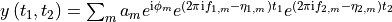
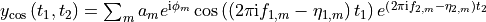
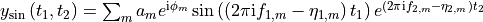
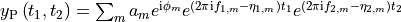
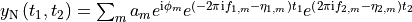

nmrespy.ExpInfo¶
- class nmrespy.ExpInfo(dim, sw, offset=None, sfo=None, nuclei=None, default_pts=None, fn_mode=None, **kwargs)[source]¶
Stores information about NMR experiments.
- Parameters
dim (int) – The number of dimensions associated with the experiment.
sw (Iterable[float]) – The sweep width (spectral window) (Hz).
offset (Optional[Iterable[float]]) – The transmitter offset (Hz).
sfo (Optional[Iterable[float]]) – The transmitter frequency (MHz).
nuclei (Optional[Iterable[str]]) – The identity of each channel.
default_pts (Optional[Iterable[int]]) – The default points included in methods that require points, if not explicitely stated.
fn_mode (Optional[str]) – Acquisition mode in indirect dimensions of mulit-dimensional experiments. If the data is not 1-dimensional, this should be one of
QF,QSED,TPPI,States,States-TPPI,Echo-Anitecho, and if not explicitely given, it will be set asQF.kwargs – Any extra parameters to be included
- Return type
None
- property default_pts: Iterable[int]¶
Get default points associated with each dimension.
- property dim: int¶
Get number of dimensions in the experiment.
- property fn_mode: str¶
Get acquisiton mode in indirect dimensions.
- generate_random_signal(oscillators, pts=None, snr=None, decibels=True)[source]¶
Generate a random synthetic FID.
- Parameters
oscillators (int) – Number of oscillators.
pts (Optional[Iterable[int]]) – The number of points to construct the time-points with in each dimesnion. If
None, andself.default_ptsis a tuple of ints, it will be used.snr (Optional[float]) – The signal-to-noise ratio. If None then no noise will be added to the FID.
decibels (bool) – If
True, the snr is taken to be in units of decibels. IfFalse, it is taken to be simply the ratio of the singal power over the noise power.
- Returns
fid – The synthetic FID.
params – Parameters used to construct the signal
- Return type
Tuple[ndarray, ndarray]
- get_shifts(pts=None, unit='hz', flip=True, meshgrid=True)[source]¶
Construct chemical shifts which reflect the experiment parameters.
- Parameters
pts (Optional[Iterable[int]]) – The number of points to construct the time-points with in each dimesnion. If
None, andself.default_ptsis a tuple of ints, it will be used.unit (str) – Must be
"hz","ppm".flip (bool) – If
True, the shifts will be returned in descending order, as is conventional in NMR. If False, the shifts will be in ascending order.meshgrid (bool) – If time-points are being derived for a N-dimensional signal (N > 1), setting this argument to
Truewill return N-dimensional arrays corresponding to all combinations of points in each dimension. plot/contour plot.
- Return type
Iterable[ndarray]
- get_timepoints(pts=None, start_time=None, meshgrid=True)[source]¶
Construct time-points which reflect the experiment parameters.
- Parameters
pts (Optional[Iterable[int]]) – The number of points to construct the time-points with in each dimesnion. If
None, andself.default_ptsis a tuple of ints, it will be used.start_time (Optional[Iterable[Union[float, str]]]) – The start time in each dimension. If set to None, the initial point in each dimension with be
0.0. To set non-zero start times, a list of floats or strings can be used. If floats are used, they specify the first value in each dimension in seconds. Alternatively, strings of the formf'{N}dt', whereNis an integer, may be used, which indicates a cetain multiple of the difference in time between two adjacent points.meshgrid (bool) – If time-points are being derived for a N-dimensional signal (N > 1), setting this argument to
Truewill return N-dimensional arrays corresponding to all combinations of points in each dimension.
- Return type
Iterable[ndarray]
- property latex_nuclei: Optional[Iterable[Optional[str]]]¶
Get the nuclei associated with each channel with for use in LaTeX.
>>> expinfo = ExpInfo(..., nuclei=("1H", "15N"), ...) >>> expinfo.latex_nuclei ('\textsuperscript{1}H', '\textsuperscript{15}N')
- make_fid(params, pts=None, snr=None, decibels=True, indirect_modulation=None)[source]¶
Construct a FID, as a summation of damped complex sinusoids.
- Parameters
params (ndarray) –
Parameter array with the following structure:
1-dimensional data:
params = numpy.array([ [a_1, φ_1, f_1, η_1], [a_2, φ_2, f_2, η_2], ..., [a_m, φ_m, f_m, η_m], ])
2-dimensional data:
params = numpy.array([ [a_1, φ_1, f1_1, f2_1, η1_1, η2_1], [a_2, φ_2, f1_2, f2_2, η1_2, η2_2], ..., [a_m, φ_m, f1_m, f2_m, η1_m, η2_m], ])
pts (Optional[Iterable[int]]) – The number of points to construct the time-points with in each dimesnion. If
None, andself.default_ptsis a tuple of ints, it will be used.snr (Optional[float]) – The signal-to-noise ratio. If None then no noise will be added to the FID.
decibels (bool) – If True, the snr is taken to be in units of decibels. If False, it is taken to be simply the ratio of the singal power over the noise power.
indirect_modulation (Optional[str]) –
Acquisition mode in indirect dimension of a 2D experiment. If the data is not 1-dimensional, this should be one of:
None- "amp"- amplitude modulated pair:  "phase"- phase-modulated pair:  
Nonewill lead to an array of shape(*pts).ampandphasewill lead to an array of shape(2, *pts).
- Return type
ndarray
- property nuclei: Optional[Iterable[Optional[str]]]¶
Get the nuclei associated with each channel.
- offset(unit='hz')[source]¶
Get the transmitter offset frequency.
- Parameters
unit (str) – Must be
"hz"or"ppm".- Return type
Iterable[float]
- oscillator_integrals(params, pts=None, absolute=True, scale_relative_to=None)[source]¶
Determine the integral of the FT of oscillators.
- Parameters
params (ndarray) –
Parameter array with the following structure:
1-dimensional data:
params = numpy.array([ [a_1, φ_1, f_1, η_1], [a_2, φ_2, f_2, η_2], ..., [a_m, φ_m, f_m, η_m], ])
2-dimensional data:
params = numpy.array([ [a_1, φ_1, f1_1, f2_1, η1_1, η2_1], [a_2, φ_2, f1_2, f2_2, η1_2, η2_2], ..., [a_m, φ_m, f1_m, f2_m, η1_m, η2_m], ])
pts (Optional[Iterable[int]]) – The number of points to construct the signals to be integrated in each dimesnion. If
None, andself.default_ptsis a tuple of ints, it will be used.absolute (bool) – Whether or not to take the absolute value of the spectrum before integrating.
scale_relative_to (Optional[int]) – If an int, the integral corresponding to
params[scale_relative_to]is set to1, and other integrals are scaled accordingly.
- Return type
float
Notes
The integration is performed using the composite Simpsons rule, provided by scipy.integrate.simps
Spacing of points along the frequency axes is set as
1(i.e.dx = 1).
- property sfo: Optional[Iterable[Optional[float]]]¶
Get the transmitter frequency (MHz).
- sw(unit='hz')[source]¶
Get the sweep width.
- Parameters
unit (str) – Must be
"hz"or"ppm".- Return type
Iterable[float]
- property unicode_nuclei: Optional[Iterable[Optional[str]]]¶
Get the nuclei associated with each channel with superscript numbers.
>>> expinfo = ExpInfo(..., nuclei=("1H", "15N"), ...) >>> expinfo.unicode_nuclei ('¹H', '¹⁵N')